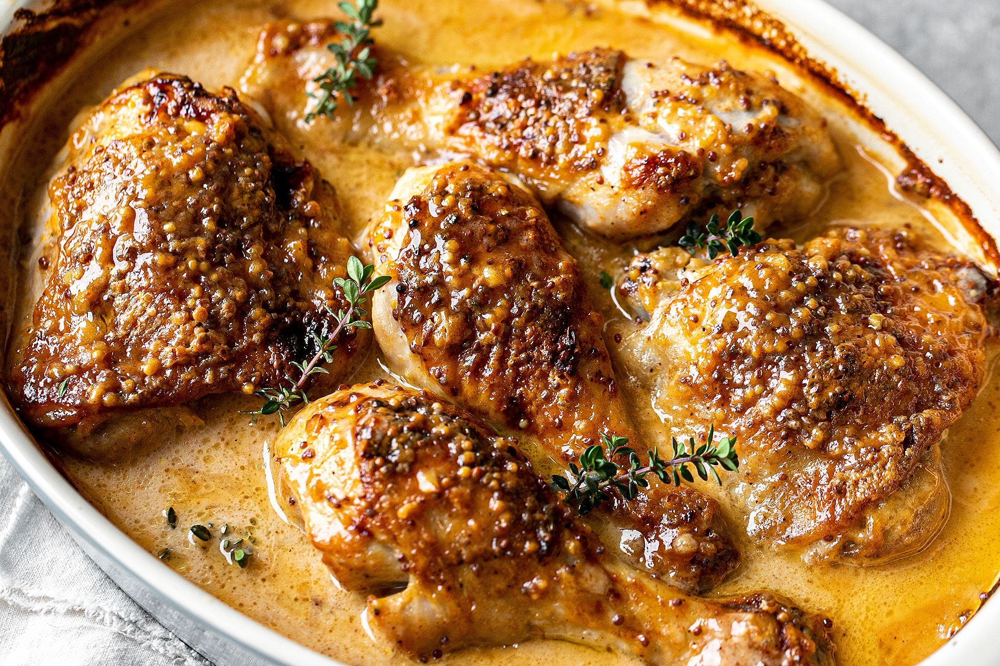

Baked Honey Mustard Chicken

Tender and juicy boneless chicken breasts glazed with a delectable combination of Dijon mustard, honey, olive oil, and aromatic seasonings. Baked to golden perfection, the succulent chicken offers a harmonious balance of sweet and tangy flavors that make it an instant crowd-pleaser.
Ingredients:
- 4 boneless, skinless chicken breasts
- 1/4 cup Dijon mustard
- 2 tablespoons honey
- 2 tablespoons olive oil
- 1 tablespoon fresh lemon juice
- 2 cloves garlic, minced
- 1 teaspoon dried thyme
- Salt and pepper to taste
- Fresh parsley for garnish (optional)
Instructions:
- Preheat your oven to 375°F (190°C) and lightly grease a baking dish.
- In a small bowl, mix together the Dijon mustard, honey, olive oil, lemon juice, minced garlic, dried thyme, salt, and pepper.
- Place the chicken breasts in the baking dish and brush both sides generously with the honey mustard mixture.
- Bake in the preheated oven for about 25-30 minutes or until the chicken is cooked through and no longer pink in the center.
- Garnish with fresh parsley if desired and serve with your favorite side dishes like roasted vegetables or a fresh salad.